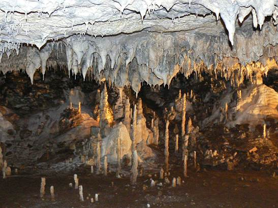

Пещерата "Снежанка" се гордее с най-красивите ледникови форми, които се срещат в България.
Тя ще ви отведе в приказния свят на любимата детска героиня и ще ви разкрие своите тайни, които са на повече от 3.5млн години.
Разположена е в Баташката планина в Западните Родопи, на 5км от град Пещера.
|
|
|
"Снежанка" е сравнително малка пещера (145м дължина), но в нея се съдържат няколко уникално
красиви зали със синтрови езерца. А по пода й може да видите пътечки от пещерни перли и оазиси от лунно мляко (бели отложения по
скалите).
|
Разходката ви ще започне от Залата на виметата, наречена така заради формата на големия си брой
сталактити. След нея ще попаднете в Голямата зала, където ще видите ръчно изработени глинени съдове, които са останали от древните
траки, населявали някога пещерата. Истинско забавление ще ви предложи следващата Музикална зала. Тя притежава невероятна акустика,
която може да ви бъде чудесно поле за изява. Запейте някоя песен и се наслаждавайте на ефектите.
|
|
|  |
Магията на пещерата обитава последната Вълшебна зала. До нея се стига по тесен, тайнствен проход,
дълъг около 25м. Той е обсипан с пищна украса от мраморно бели сталактити. В тази невероятна зала пред вас ще се разкрие царството
на Снежанка и седемте джуджета. Сред изобилието от изящни синтрови образувания се откроява фигурата на приказната героиня и
снежнобелия балдахин на леглото й.
Пещерата "Снежанка" омагьосва всеки, който прекрачи прага й. Вие сте следващите - нас вече ни плени!
|